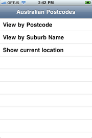
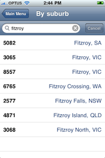
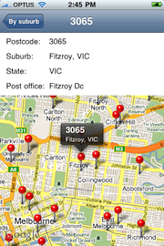
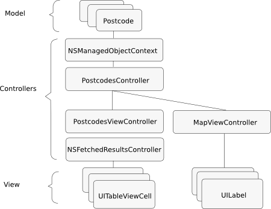

Please note: this article is part of the older "Objective-C era" on Cocoa with Love. I don't keep these articles up-to-date; please be wary of broken code or potentially out-of-date information. Read "A new era for Cocoa with Love" for more.
The design of an iPhone application
In this post, I'll discuss iPhone program design using the example of a small but non-trivial iPhone application to provide examples of how the design is implemented. The design includes: how to manage data coming from different sources, how to manage multiple views of that data and how to design your program so it remains simple and manageable as it grows. In short, I'll be discussing how Model-View-Controller (MVC) applies to an iPhone application but I'll also discuss how even simple programs are considerably more hierarchic through their controllers and branched through their models and views than the basic description "Model-View-Controller" might imply.
The sample program
The sample program for this post takes the Core Data SQL database of Australian Postcodes that I created last week from a CSV file and uses that in an iPhone application that allows you to:
- Browse and search the database.
- Display entries in a
MKMapView. - Find the nearest entry to the user's GPS and display that on a map.
The following screenshots show the basic flow of the application.
  The "Show current location" step skips the middle screenshot in the workflow and goes straight to the map, displaying the closest "Postcode" in the database for the user's location, or just the user's location (with no pins in the map) if they are more than 0.1 longitude or latitude away from the nearest post office.
You can download the complete project AustralianPostcodes.zip (961kB).
Steps in designing a program
The basic steps in designing a small user program are:
- Decide what the program will display to the user.
- Work out how the user will navigate through the program to reach each view.
- Work out the data that is needed to populate the views that the user will navigate.
- Decide where that data will come from and how you will manage access to it.
- Decide how and when you will construct your views.
- Decide how you will provide your views with data.
The first two points are the program's requirements and the remainder is the high level design. For this post, I'm going to consider the first two points complete (as given in the previous section).
I'll discuss steps 3 and 4 as a single concept "Program data", then steps 5 and 6 as "Program construction".
Program data
While it might not be obvious, this program actually has 5 different sources of data:
- Postcodes and their related data
- The GPS location
- The cache of fetched postcodes, filtered by search terms
- The cache of postcodes nearest the selected location or GPS location
- List of menu items on the top-level page
The last item doesn't need to be data (it could easily be done in code) but I wanted to talk about a range of different data sources and implementing menus like this from data can dramatically reduce the size and complexity of your code (see my earlier post Simplifying your code using NSDictionary).
Postcode data and the PostcodeController
Obviously in this program, the Core Data SQL database is the source of the postcode data. However, there is more to clarifying the data source than that.
The postcode data is used from multiple views in the application. For this reason, it will need to live in its own persistent location that views can access when needed. To handle its creation, persistence and access, we'll need some form of controller to manage the lifecycle of this data and access to it.
Core Data runs in an NSManagedObjectContext. In some respects, you may consider that the NSManagedObjectContext manages access to the data. While this is true at the low level of reading, writing, cacheing and fetching, the reality is that NSManagedObjectContext is not a manager in a broader sense for your program and your program specific logic.
Specifically, your program will need:
- A way to construct the Core Data persistence stack (i.e. open a Core Data SQL store and create an
NSManagedObjectContextfor it). - A way to access the current context from anywhere in the program.
- A place to put context processing code (if needed). This might include importing/exporting code, specialized fetching code, editing and validating code.
While this iPhone application doesn't need the last point, the first two are necessary.
In the default Xcode template for an iPhone application using Core Data, the NSManagedObjectContext is constructed in the AppDelegate object and from there is pushed onto the RootViewController so that it can be used there.
Simply put: I dislike this approach because it gives the AppDelegate multiple responsibilities unrelated to its primary purpose.
The AppDelegate exists to implement functionality during key points in the UIApplication's lifecycle (most importantly startup and shutdown). The AppDelegate doesn't use the NSManagedObjectContext for itself and the AppDelegate's primary responsibility is not document management — you should not be using your AppDelegate as your application's document manager.
Every class should have a single purpose
Every piece of functionality that a class exposes to the rest of the program (i.e. functionality that is part of the class' external interface) should be obviously part of that class' primary role in the program.
For this reason, I create a class (in this project it is named PostcodesController) whose responsibility it is to construct the document (our NSManagedObjectContext) and handle access to it or process the document if needed.
The PostcodesController will be a singleton, as most document managers are (see the NSDocumentController in Mac OS X). Since the application only has one set of Postcode data, there is no need to select the "current" document or manage a set of Core Data persistence stacks but this class is where that behavior would be added if needed in future.
The PostcodesController is then acccessed by the PostcodesViewController to get the current context. However, the data this context contains is not used directly; it is cached by the NSFetchedResultsController as a separate set of data and from there it is used to populate the table view.
Map data
Map data in the application consists of three parts:
- The map "tiles" (the street map shown in the view)
- The "current location" (which is either the result of a selection or the GPS location).
- The array of pins displayed in the map
The actual map tiles are loaded by the MKMapView that Apple's MapKit provides. We don't really need to worry about that.
The selected location or GPS location is a little trickier. This either comes from the user's selection on a previous screen or from the CLLocationManager (which supplies us with location data from the GPS). If this was used by multiple views in the application, then we would need a special class to manage the current location for the whole application (like the PostcodeController manages the postcode database for the whole application) however, we only need location data on the map screen, so the MapViewController which manages this screen can handle this.
The array of pins displayed on the map is really just a selection of the data from the postcodes database, selected using criteria from the current location. Again, since this is only used on the map screen, so it can be controlled by the MapViewController as long as the difficulty of doing so remains low.
List of menu items
Sometimes, data is so simple to load and so customized to the location where it will be used that managing it is no concern at all. The array of dictionaries that provides the structure for the "Main Menu" in the program is a good example of this — the data can be read in a single instruction, its format is written to match the format that the "Main Menu" wants, it has no state to maintain and doesn't require any editing.
Program construction
This program started with a "Navigation-based application" template in Xcode and the project name "AustralianPostcodes". This means that the following steps are setup by the template:
- The
UIApplicationwill load the MainWindow.xib on startup - The MainWindow.xib will construct the
AustralianPostcodesAppDelegate, aUIWindowand aUINavigationControllerwhich will load theRootViewControllerfrom RootViewController.xib and set it as the top level view in the navigation hierarchy. - The AustralianPostcoddesAppDelegate will insert the
UINavigationController's view into theUIWindowand display the window.
The primary controllers in the program are the PostcodesController (which controls the construction of the Core Data persistence stack), the RootViewController (which shows the main menu), the PostcodesViewController (which displays the table of objects fetched from Core Data) and the MapViewController (which displays a single Postcode object and the map view).
Constructing the RootViewController
The RootViewController needs to display its list of options in the table. When any row in the table is tapped, a new UIViewController subclass will need to be constructed and pushed onto the UINavigationController.
Due to the data-configured nature of the RootViewController, the subclass of UIViewController constructed and any parameters passed into its initializer are all specified in the data file.
This means that this class is incredibly simple. The three different rows perform three different tasks:
- Load a PostcodesViewController and sort by postcode
- Load a PostcodesViewController and sort by suburb
- Load a MapViewController and use the GPS for location data
But the differences come from the data. The work done by the RootViewController is the same in each case.
Constructing the PostcodesViewController
This class displays the postcode data but it has to perform four tasks as part of that job:
- Fetch the sorted (and possibly filtered) postcodes from the database
- Construct/configure the table view cells to display the fetched results in the table
- Respond to changes in the search string by refetching the data
- Respond to taps on a row by loading a MapViewController to display the map
In this case, much of the first step is handled by a standard NSFetchResultsController. This class is designed to work closely with the UITableView so it makes sense to keep this work close to the view. If we weren't using an approach so closely tied to the view, it would also be possible to put a fetch method in the PostcodesController and pass parameters to it so that it prepared the data in an appropriate format.
When a row is selected, the Postcode object (the subclass of NSManagedObject associated with the selected row) is passed into a newly constructed MapViewController.
Constructing the MapViewController
The MapViewController needs to perform the following tasks:
- If not given a selected Postcode object, then the Postcode in the database nearest the GPS location must be fetched.
- Postcodes around the current location must be fetched and displayed on the map
- The map view must be centered on the selected postcode
- Details about the selected postcode must be displayed in the
UILabels at the top of the screen.
To enable the easy display of postcodes as points on the map, the Postcode class (the subclass of NSManagedObject used by the Postcode entity in the Core Data model) implements the MKAnnotation protocol. This means that the Postcode objects returned from a fetch can be immediately added to the MKMapView.
This class needs to perform its own fetching from the Core Data database. Since the PostcodesViewController and MapViewController both need to fetch (albeit in slightly different ways) and they both use a significant volume of code of to do this fetching, it is possible that a common interface to perform fetch actions for both would be a future improvement.
Always be ready to iteratively refactor
As you implement a program, you should always be on the lookout for easy ways to simplify your program by implementing minor redesigns. Looking for multiple places where your program repeats the same functionality is the most prominent example of this. A corollary to this is that you should never copy and paste blocks of code — a copy and pasted block of code should be a single method/function/macro that you simply invoke from multiple places.
Model-View-Controller
Interpreting this program according to model-view-controller would go like this:
- Model — the
Postcodeobjects in theNSManagedObjectContextare the model. - View — the
UITableViewCellobjects on the "Main Menu", "By suburb" and "By postcode" screens and theMKMapViewon the map screen. - Controller — the
AustralianPostcodesAppDelegate,RootViewController,PostcodesViewController,MapViewController,PostcodesController.
Why do we need so many controllers?
An interesting point to note is that every class in the project (with the exception of Postcode) is a controller class.
Why do we need so many controllers? The answer is that we have a normal number of controllers — the correct analysis is that we have is an absence of custom model and view objects.
A well written model object or view object needs no custom code for customization — the construction provided by the controller and the data (provided from configuration files on construction or from model objects when loaded) is all the customization that they require.
I've written posts about drawing customizing table views without subclassing any views — the customization comes from how the view is constructed and set up.
On the model side, NSManagedObject is configured by the .xcdatamodel file and can be used without further configuration if desired. Similarly, NSDictionary is used by the RootViewController to hold custom structure data without need for custom behavior.
Obviously you will probably need custom model and view objects at some point but the fewer you have, the easier things will be.
A simple diagram of the program
Generally though, I don't like this type of over-simplification. My problem is that while it does describe a single Model-View-Controller path through the program, this program has multiple sources of data and each source of data is managed at a different point and displayed in a different way.
A different way to think about application design
Despite the simplistic diagram shown above, the reality is that we have the following model-controller relationships in the program:
- The
Postcodesin theNSManagedObjectContext, controlled byPostcodesController - The Plist which describes the Main Menu, controlled by
RootViewController - The cached fetch of
Postcodesby suburb or postcodes, controlled byNSFetchedResultsControllerin conjunction withPostcodesViewController - The cached fetch of nearest
Postcodes, controlled byMapViewController - The GPS location, controlled by
CLLocationManager
So a full diagram of the data paths through the program would be considerably more complex than the diagram shown above.
An important point to note about the above diagram is that there are two layers of controllers: one layer that controls the model at the top and one layer that controls the views at the bottom. The result of this observation is that the view-and-controller pairs and the the model-and-controller pairs are really two instances of the same design pattern. This means that we can add the following view-controller relationships to the list of model-controller relationships shown above:
- The
UITableViewCellsin theUITableViews, controlled byPostcodesViewControllerandRootViewController - The
UILabelsand theMKMapView, controlled by theMapViewController
Module-controller
What this does is to break the entire program down into pairings of:
- Class that "does" something (store data, display data, fetch data)
- and Controller which loads and configures it
Your program is then a hierarchy of controllers (UIApplication/AppDelegate, Document controller, UIViewController subclasses) which load and configure their own modules (.xib files and windows, Core Data, UIView classes) to perform their actual work — but these modules have no connections to the rest of the program, they rely entirely on the controller to set them up, provide their data and make them work.
As your program grows larger and more complex, your controllers may have sub-controllers — in fact, your module objects may become controllers to their own sub-module objects. Through this structure, you can have a giant program but each element is still simple within itself. Simplicity remains as the program grows because every individual element is self-contained.
Implications of this way of thinking
The best programs are highly modular and decoupled
A good application has tightly focussed modules which are totally decoupled from the rest of the program and controllers which are lightly coupled to other controllers in a hierarchical arrangement through the program but do nothing other than provide the contextual information for their controlled objects.
The idea is to make all aspects of your program clean, decoupled and resusable, in the same way that good view and model classes are.
I prefer this way of thinking about application design. In essence, treat every data object, every network connection and every view object in the program (any class which "does" something) in the same way: like its own independent module. These independent module classes should:
- have their own controller which loads and configures them
- not have a connection (pointer or reference) to any other part of the program (except other objects within the module)
If you feel like one of these module objects needs to access another part of the program, try to redesign so that the controller pushes the information to the modular class, instead of the module object fetching for itself.
The corollary to this is that your controller objects should, as much as possible, avoid "doing" anything except constructing and configuring these document-like objects. Controllers may have a lot of code compared to the module classes but that code should always be responding to a change from a module object and passing a message to another module or constructing another module. Controllers are all about setup, reactions and inter-module communication.
Most of the time, the module objects controlled by the controller will not be your own special subclasses — often they're just default NSDictionary objects or UIViews or NSManagedObjects — but it is important to keep the module object and controller relationship in mind to help guide how you write your program.
Keep the main advantage of Model-View-Controller thinking
Even if you do start thinking about every component in your program in module-controller terms, you shouldn't drop the key advantage of Model-View-Controller — to focus your application around the workflow of your "model".
Specifically: you should always know what the "model" of your program is. All aspects of your program should be directed towards showing, editing, displaying that data. Even if lots of other modules, tasks and activities are implemented as part of the overall process, they should not disrupt the model's workflow.
Conclusion
You can download the complete project AustralianPostcodes.zip (961kB).
I wrote a lot of code for this post but I've included none of it here. The code exists to make the abstract discussion about how to design a program seem less abstract — I hope that you can look at the code and understand the sometimes vague statements I've made in this post.
The first half of the post was about identifying the data your program has and then identifying how to build the controllers in your program to load and display this data. The purpose of going through these steps is to explain that these are the details you must have clear in your mind before you start writing code. Programming requires — above all else — that you be able to absolutely and unambiguously clarify your idea.
The second half of the post was about module-controller relationships. The purpose here is not to say Model-View-Controller is wrong but to point out that the purpose of Model-View-Controller is decoupled, reusable modules with all construction and context provided by hierarchy of lightly coupled controller objects running through the spine of your program — and that this is a pattern that can be applied repeatedly (and even recursively) throughout your program, not just to views or your main model.
There's a Garbage Collection ninja hiding in the project templates